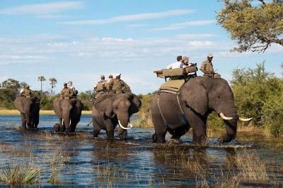

The Impact of Wilderness Tourism
A
The market for tourism In remote areas is booming as never before. Countries ail across the world are actively promoting their ‘wilderness’ regions - such as mountains, Arctic lands, deserts, small islands and wetlands - to high-spending tourists. The attraction of these areas is obvious.- by definition, wilderness tourism requires little or no initial investment. But that does not mean that there is no cost. As the 1992 United Nations Conference on Environment and Development recognized, these regions are fragile (i.e. highly vulnerable to abnormal pressures) not just in terms of their ecology, but also in terms of the culture of their inhabitants. The three most significant types of fragile environment in these respects, and also in terms of the proportion of the Earth's surface they cover, are deserts, mountains and Arctic areas. An important characteristic is their marked seasonality, with harsh conditions prevailing for many months each year. Consequently, most human activities, including tourism, are limited to quite clearly defined parts of the year.
Tourists are drawn to these regions by their natural landscape beauty and the unique cultures of their indigenous people. And poor governments in these isolated areas have welcomed the new breed of ‘adventure tourist’, grateful for the hard currency they bring. For several years now, tourism has been the prime source of foreign exchange in Nepal and Bhutan. Tourism is also a key element in the economies of Arctic zones such as Lapland and Alaska and in desert areas such as Ayers Rock in Australia and Arizona’s Monument Valley.
B
Once a location is established as a main tourist destination, the effects on the local community are profound. When hill-farmers, for example, can make more money in a few weeks working as porters for foreign trekkers than they can in a year working in their fields, it is not surprising that many of them give up their farm-work, which is thus left to other members of the family. In some hill-regions, this has led to a serious decline in farm output and a change in the local diet, because there is insufficient labour to maintain terraces and irrigation systems and tend to crops. The result has been that many people in these regions have turned to outside supplies of rice and other foods.
In Arctic and desert societies, year-round survival has traditionally depended on hunting animals and fish and collecting fruit over a relatively short season. However, as some inhabitants become Involved in tourism, they no longer have time to collect wild food; this has led to increasing dependence on bought food and stores. Tourism is not always the culprit behind such changes. All kinds of wage labour, or government handouts, tend to undermine traditional survival systems. Whatever the cause, the dilemma is always the same: what happens If these new, external sources of income dry up?
The physical impact of visitors is another serious problem associated with the growth In adventure tourism. Much attention has focused on erosion along major trails, but perhaps more important are the deforestation and impacts on water supplies arising from the need to provide tourists with cooked food and hot showers. In both mountains and deserts, slow-growing trees are often the main sources of fuel and water supplies may be limited or vulnerable to degradation through heavy use.
C
Stories about the problems of tourism have become legion in the last few years. Yet it does not have to be a problem. Although tourism inevitably affects the region in which it takes place, the costs to these fragile environments and their local cultures can be minimized. Indeed, it can even be a vehicle for reinvigorating local cultures, as has happened with the Sherpas of Nepal’s Khumbu Valley and in some Alpine villages. And a growing number of adventure tourism operators are trying to ensure that their activities benefit the local population and environment over the long term.
In the Swiss Alps, communities have decided that their future depends on integrating tourism more effectively with the local economy. Local concern about the rising number of second home developments in the Swiss Pays d'Enhaut resulted in limits being imposed on their growth. There has also been a renaissance in communal cheese production In the area, providing the locals with a reliable source of income that does not depend on outside visitors.
Many of the Arctic tourist destinations have been exploited by outside companies, who employ transient workers and repatriate most of the profits to their home base. But some Arctic communities are now operating tour businesses themselves, thereby ensuring that the benefits accrue locally. For instance, a native corporation in Alaska, employing local people. Is running an air tour from Anchorage to Kotzebue, where tourists eat Arctic food, walk on the tundra and watch local musicians and dancers.
Native people In the desert regions of the American Southwest have followed similar strategies, encouraging tourists to visit their pueblos and reservations to purchase high-quality handicrafts and artwork. The Acoma and San lldefonso pueblos have established highly profitable pottery businesses, while the Navajo and Hopi groups have been similarly successful with jewellery.
Too many people living in fragile environments have lost control over their economies, their culture and their environment when tourism has penetrated their homelands. Merely restricting tourism cannot be the solution to the imbalance, because people's desire to see new places will not just disappear. Instead, communities in fragile environments must achieve greater control over tourism ventures in their regions, in order to balance their needs and aspirations with the demands of tourism. A growing number of communities are demonstrating that, with firm communal decision-making, this is possible. The critical question now is whether this can become the norm, rather than the exception.
Questions 1-3
Reading Passage has three sections, A-C.
Choose the correct heading for each section from the list of headings below.
Write the correct number i-vi in boxes 1-3 on your answer sheet.
|
List of Headings |
|
|
i |
The expansion of international tourism in recent years |
|
ii |
How local communities can balance their own needs with the demands of wilderness tourism |
|
iii |
Fragile regions and the reasons for the expansion of tourism there |
|
iv |
Traditional methods of food-supply in fragile regions |
|
v |
Some of the disruptive effects of wilderness tourism |
|
vi |
The economic benefits of mass tourism |
|
1 Section A 2 Section B 3 Section C |
Questions 4-9
Do the following statements reflect the opinion of the writer of Reading Passage?
In boxes 4-9 on your answer sheet, write
YES if the statement reflects the opinion of the writer
NO if the statement contradicts the opinion of the writer
NOT GIVEN if it is impossible to say what the writer thinks about this
4 The low financial cost of selling up wilderness tourism makes it attractive to many countries.
5 Deserts, mountains and Arctic regions are examples of environments that are both ecologically and culturally fragile.
6 Wilderness tourism operates throughout the year in fragile areas.
7 The spread of tourism in certain hill-regions has resulted in a fall in the amount of food produced locally.
8 Traditional food-gathering in desert societies was distributed evenly over the year.
9 Government handouts do more damage than tourism does to traditional patterns of food-gathering.
Questions 10-13
Complete the table below.
Choose ONE WORD from Reading Passage for each answer.
Write your answers in boxes 10-13 on your answer sheet.
The positive ways In which some local communities haveresponded to tourism |
|
|
People/Location |
Activity |
|
Swiss Pays d'Enhaut Arctic communities Acoma and San lldefonso Navajo and Hopi |
Revived production of 10 Operate 11 businesses Produce and sell 12 Produce and sell 13 |
---End of the Test---
Please Submit to view your score, solution and explanations.